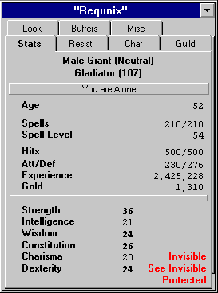
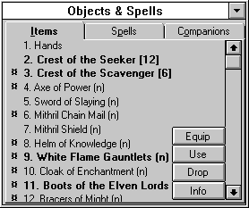
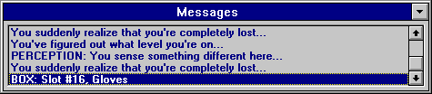

The Game Screen
When you start (run your character), you will find a number of windows displayed on your screen. Feel free to arrange and size (for character windows) them any way you like - their positions and size will be saved when you exit. To reset a resized window, simply use the Control Panel (F10). Below is a picture of each main window followed by a brief description.
NOTE: All of the windows (except for the City Services windows) in the 2D version of the game may be proportionally resized by dragging the window border. To resize the City Services windows, you must use the Window functions located in the Control Panel.
Tabbed Windows
In order to make the interface and display of The Depths of Dejenol easier, the two main windows of the game are Tabbed windows. These two windows are the Character Window (captioned with the current character's name) and the Spells & Objects Window. The pages (or tabs) on these two windows can be changed by selecting a tab representing the page that you wish to view. Below is a description of these windows and pages.
Character (stats) Window

The Character Window is where all of the character and statistical information can be found. Below is a description of the separate tabs:
Stats (Main Character Information)
This tab is used to display your character's Name, Guild Title and all other important statistics, including special modifiers (e.g. invisible, levitating, poisoned).
Resist. (Resistances)
This query will list all resistances and the current resistance level (either '-' for none, or the resistance percentage) for the selected character.
Char (Character Statistics)
A general collection of your current character's information. Includes total monsters killed, how many times the character has died (and has been raised with complications), the natural and modified (by items) stats of the character, and more.
Guild (Guild Information)
This query will display all of the guilds the character is a member of, the level of each guild, and a list of the abilities that the character has, along with a rating (between 1 and 100) and which guild the ability comes from.
The Ability rating is based on the maximum level of that particular ability available in the game. For example, the Warrior's guild is the only guild that can reach a Fighting Ability rating of 100 since they have a higher fighting ability. And since the Warrior's guild can reach the highest ability, their highest ability is what your current ability will be rated on. This means that no other guild can give a character a Fighting Ability of 100.
Look (Area Look)
The Area List will display the characters that are in the same room as the current character. This is useful for finding out who is in a room if you've stumbled over somebody but don't know who.
Buffers (Spell/Item Buffers)
Contains your spell and item buffer information. Your character has the ability to move (Drag and Drop) spells and items into the slots, which then allows your character to use the item or cast the spell in the selected slot by hitting Shift-Number Key on the keyboard, clicking on the slot itself, or pressing the associated number button in the dungeon window. Very useful for combat.
Misc (Item, Spell or Companion Info)
The Miscellaneous Tab is used to display either Item, Spell or Companion Information.
Item Information
Depending on the ID (Identification) Level of an item, the information displayed includes the following:
The Name, Class and A/D an item has to offer (when equipped). If an item is a weapon, a number in brackets will appear after the A/D that shows the 'power' of the item (how hard it can hit - higher numbers are better). Information also includes how many swings an item has (if any) and how many hands the item requires to equip.
If an item casts a Spell and is completely identified, you will be informed of what the spell is. You will also be told whether or not the item casts a spell at a specific 'spell level' or the level of the caster. Items that cast spells at a specific level always cast the spell at the same level of power while items that cast spells based on the characters spell level cast spells in magnitude of the characters spell level.
If an item is completely identified, you will also be informed of it's Abilities (i.e. Resist Fire, or Levitate). These abilities are only in effect when the item is Equipped.
SR and SM represent "Stats Required" and "Stats Modified". The numbers that follow SR represent the stats that are required to use or equip the item (in the following order - Str, Int, Wis, Con, Cha, Dex). The numbers in SM represent the amount by which a stat will be raised or lowered when the item is equipped or used.
An item is either Class Restricted or Not Class Restricted. Class Restricted items mean that you must currently be a member of a guild that is allowed to use the item. Not Class Restricted means that your current guild does not need to be able to use an item, but you must be a member of a guild that can use the item. Guilds that are allowed to use an item are listed along with what level (in that particular guild) one has to be to use (or equip) the item. For more information, see the Items section.
ID Level represents how much you know about the item. The ID Level determines how much you know about an item. If you do not know very much, most of the above information will not be available.
Spell Information
General Spell Information includes the Name and Class of the Spell. The Guild (based on the most powerful guild you are a member of that teaches the spell) and spell points required to cast the spell. Any special information (i.e. how many groups & monsters the spell affects if it's a combat spell) and the Stats Required to cast the spell. You will also be told if the spell is a 'mass' spell (i.e. affects the entire party).
Spell Power
With Damage and Heal spells, you will also see two numbers after either "Damage:" or "Heal:" (for example, '15/5'). These numbers represent the <base>/<levelmodifier> of the given spell. For more information, see the Spells section of the Helplesson
Bold spells indicate that your character has the stats to cast the spells. Non-Bold spells indicate that your character is lacking in one or more stats required to cast the spell.
Companion Information
Depending on the ID Level of the character (based on Intelligence, Wisdom and Guild Level), the information displayed includes the following:
The Name, Alignment and A/D of the companion. Also showed are the Stats (in the same order as the Item Information stats), the ID Level and Special Abilities (if any) of the monster (i.e. Fire Resistant, Can Stone, etc.).
A character will also be told the level of 'contentment' or 'binding' of the current companion (based on whether or not the companion joined free of will or was bound/charmed). Discontent companions (companions who have joined free of will) are likely to leave if they become too discontent while bound companions are likely to turn on their master.
Objects & Spells Window

Items
Items window. From here, you can Equip, Use, Drop and Examine items. You can also swap items and move items to the Store, Bank and the Buffer Window by using Drag and Drop. To select an item to Equip, Use or Drop, click on the item and then on the associated button. The currently selected item will be highlighted blue. When you select 'Equip', the next item slot will automatically be highlighted (selected). As a shortcut (nice when in combat), you can use an item by double-clicking on it.
Spells
Your Spells window. From here, you can look up spells and cast them. You can also get information about a spell as well. This window also supports Drag and Drop to the Buffer Window. When you click on a spell, it will be highlighted blue and selected to cast. To cast a spell that has been typed in or selected, click on the Cast button or hit Enter while in the 'Spell Name' text box. To get information on a spell, click on the selected spell (or type it in) and click on the Info button. For frequently used spells, it's recommend that one uses a Buffer.
Companions
Your Companion's information window, containing the type of creature for a companion along with their hits. The buttons allow you to kick out a specific companion whenever you wish and even turn and attack them. When you pick up a dead companion or character, their number (for companions) or name (for characters) will be displayed above the box containing the companion information. You can also Name your companions and get information on a companions Special Abilities. For more information, see the Companions section.
Messages Window

All important messages for your character or others in your party will be displayed here. When you cast a spell on yourself or another, or find an item, it will be displayed here. Experience required for your guild will also be displayed here.
You can clear the message window by double-clicking on the list box.
Party Window
 Even when only one character is loaded, the party window is still displayed. The reason for this is so that the player can see the character's current hits, status, etc, if the Stats Window is tabbed to a page other than the character stats page. For more information on using this window, see the Parties section.
Even when only one character is loaded, the party window is still displayed. The reason for this is so that the player can see the character's current hits, status, etc, if the Stats Window is tabbed to a page other than the character stats page. For more information on using this window, see the Parties section.
When you are in different locations (I.E. the City or the Dungeon), other windows will be available. They will be discussed and described later in this Helplesson
Move to the next section to read about the Toolbar.
Move to the previous section to read about Creating a Character.
M1: "The Depths of Dejenol" is a Trademark of Decklin's Domain Ltd and is © Copyright 1994-2026 All Rights Reserved